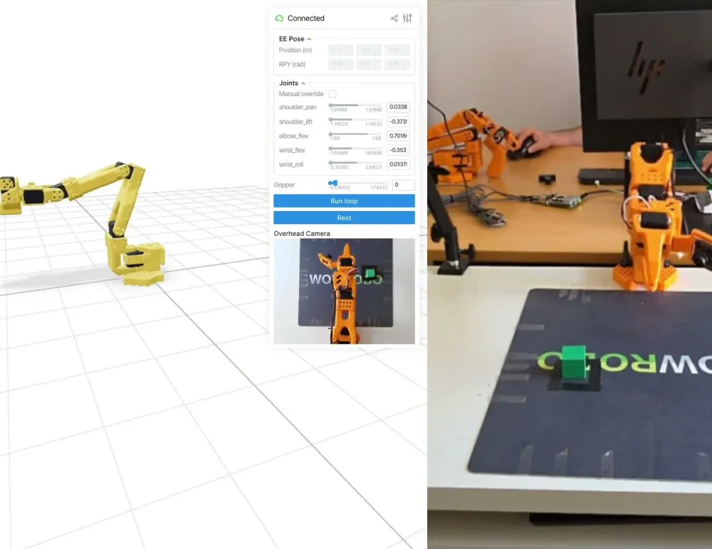

SO-101 ROS Physical AI
I authored a hands-on physical-AI course for The Construct and built its end-to-end ROS 2 reference stack for real SO-101 arms.
The stack spans leader/follower teleoperation, ros2_control, MoveIt 2, multi-camera data capture, LeRobot conversion and training, ACT/SmolVLA inference, and Rerun visualization.